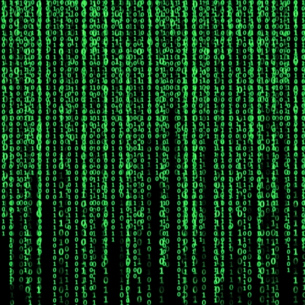

This is a project I worked on for my artificial intelligence class
where Ethan Poe, Tim Fields and I improved a convolutional neural
network for VizDoom which is an AI platform for the 1993 video
game Doom. The project involved understanding the
convolutional neural network, taking rigorous data on how well the
network is performing, then making improvements to the network and
logging that data. We used the Python package matplotlib to
display the data of the networks, this data can be seen in the
paper linked below.


This project is a work in progress, but I am working on an arcade
lightgun game similar to classics like
Time Crisis, House of the Dead and Duck Hunt
My old friend Uriel Rivera is going to help with the artwork for
the game. Currently it is more of a prototype but I hope to make
something fun as I have fond memories of playing these arcade
games as a kid. This project has really taught me how and why to
use classes in coding. So far this project needs a player class,
enemy class. and more. Without these classes the main game loop
would be far too convoluted and difficult to read.

This is a Python program to add the episode names to video files
of TV shows. For instance, it would change "Seinfeld S02E11.mkv"
to "Seinfeld S02E11 The Chinese Restaurant". I started this
project to teach myself how to use Python and to practice using an
API. This program reads in the television show name and loads in
the data for that show from the IMDB API. After the data is pulled
from the API, it appends the episode name to the end of the file,
like the Seinfeld example above. This project taught me a
lot about how to use APIs. I would like to go back to this project
to improve certain aspects of it.

I created this project for the Computer Science Club at Southwestern University.
I am the manager of this project so I create tickets for new featurs that students need to implement.
Currently the bot has a myriad of commands such as fetching the most liked video from our professor's Youtube channel,
a voting system, it can fetch IMDB data and more. I originally created this because I wanted a group project for the Computer
Science Club to work on. Something that would help underclassmen fill their resume and a project that could be developed everlastingly.

For Linear Algebra, I wrote an implementation of the Hill Cipher Algorithm. The program takes a text and encrypts it using the Hill Cipher Algorithm.
It converts the text into ASCII characters then fits them into several 3x1 matrices and encrypts them using a 3x3 matrix that serves as the key. After the
encryption, it decrypts it following the same process except the 3x3 matrix is the inverse of the key. I wrote a detailed explanation using LaTeX to explain the process.
I wrote this primarily to help comprehend the Hill Cipher Algorithm and to also practice coding something more math heavy with the Python module numpy
These are just a bunch of quick projects I did. Most of them are
batch files used to automate a task. For instance, there is a
script that rips all subtitle files from a tv show and hard
encodes them into the video file. There is a script that uses
Youtube-DL to download a video then convert the file to an mp3
format. There is a script that encodes videos to h264. The only non batch file is the
xlsx-practice.py which is a Python program that I created to
practice opening excel sheets and manipulating the data in Python.